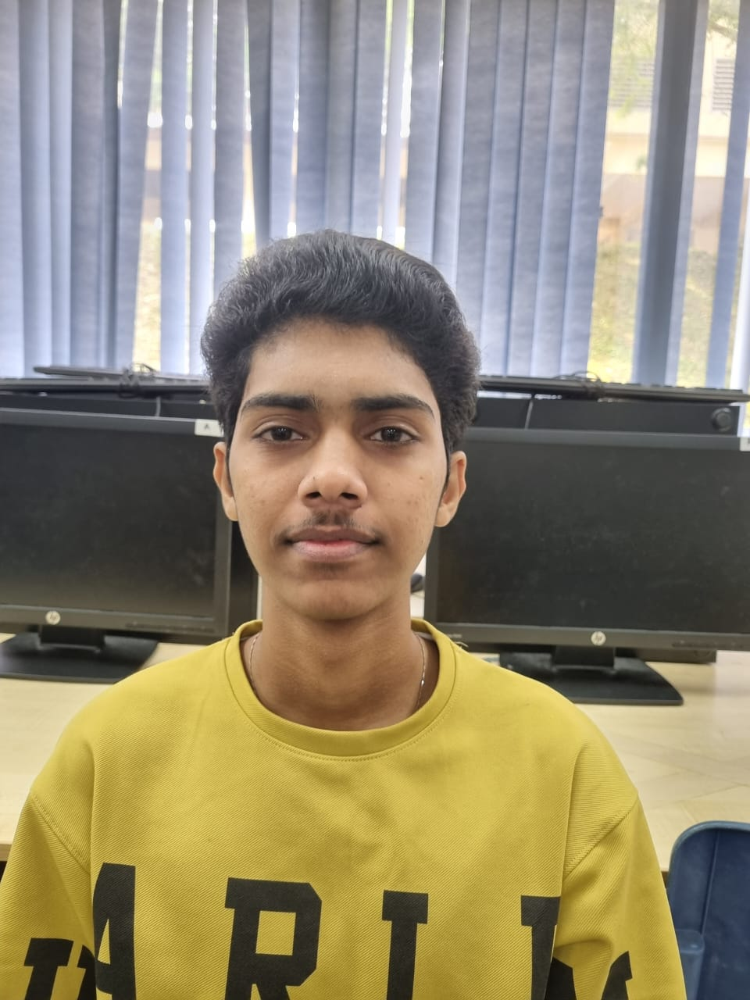

About A Dog's Life

About Us
A Dog's Life was established in 2023 to serve the boarding needs of our daycare clients. There was a search for property in the greater chicago area that would enable our daycare clients to not go too far out of their way to see us. A Dog's Life center sits on nearly five acres in a quiet valley next to a horse ranch. It is our mission to always do what is best for the dog because your dog deserves the very best!
Meet our Team

Stanliey - General Manager
At our esteemed dog care center, Stanliey shines as our dedicated General Manager.
With a passion for pets and years of experience in canine care, Stanliey plays a
crucial role in ensuring that your furry friends receive the best care and attention
possible.
As General Manager, Stanliey oversees the daily operations of our center, always
striving to provide a safe, nurturing, and enjoyable environment for your beloved dogs.
Stanliey's commitment to excellence and a deep understanding of canine needs make him an
invaluable leader in our team.
At our esteemed dog care center, Stanliey shines as our dedicated General Manager. With a passion for pets and years of experience in canine care, Stanliey plays a crucial role in ensuring that your furry friends receive the best care and attention possible.
As General Manager, Stanliey oversees the daily operations of our center, always striving to provide a safe, nurturing, and enjoyable environment for your beloved dogs. Stanliey's commitment to excellence and a deep understanding of canine needs make him an invaluable leader in our team.

Vernon - Assistant Manager
Meet Vernon, the heart and soul of our dog care center in his role as Assistant Manager. With a genuine love for dogs and a keen eye for detail, Vernon plays a vital role in ensuring the smooth operation of our center and the well-being of your four-legged companions.
As Assistant Manager, Vernon's responsibilities include:
- Supporting Daily Operations: Vernon works closely with our General Manager to oversee
day-to-day operations. His dedication ensures that our center runs efficiently, providing
a safe and comfortable environment for every dog in our care.
-
Staff and Customer Relations: Vernon excels at building strong relationships, both with
our dedicated staff and our valued clients. His friendly and approachable demeanor makes
him a go-to point of contact for any questions or concerns.
-
Quality Care: Vernon shares our commitment to delivering top-tier care. He ensures that our
services, from feeding and exercise routines to grooming and playtime, align with our high
standards of pet comfort and happiness.
